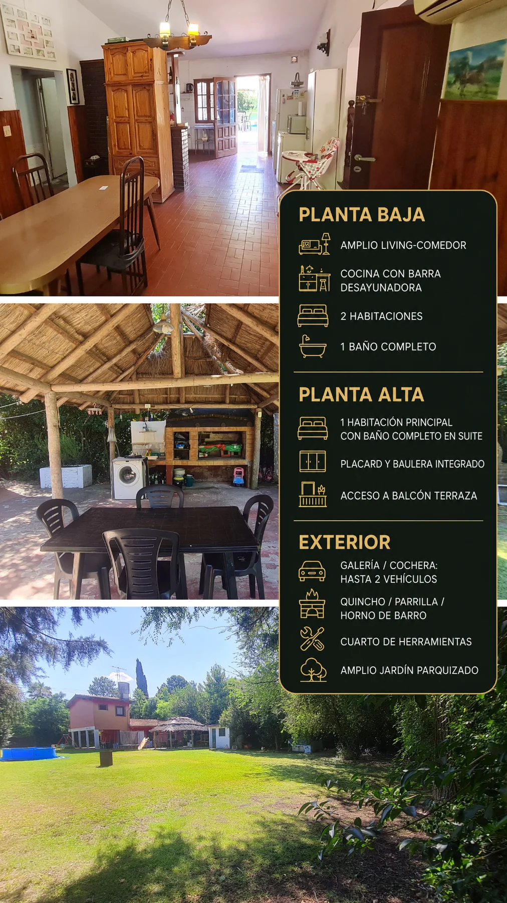
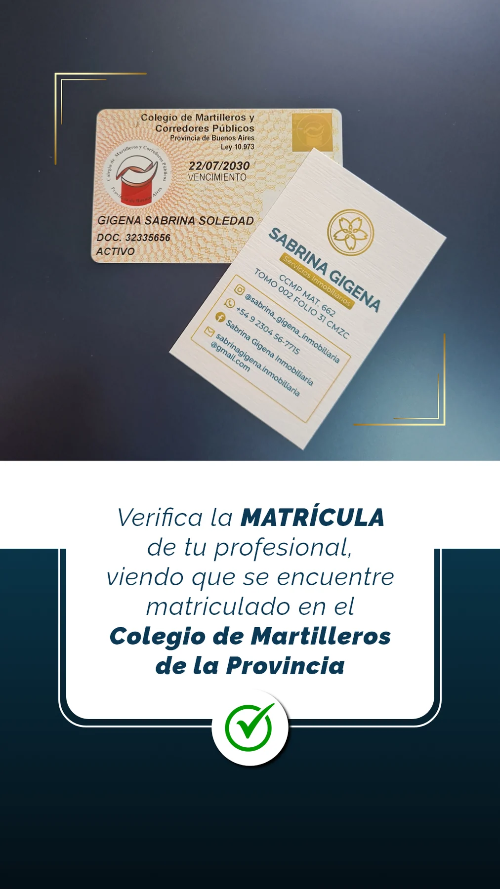

Campana · Santa Brígida
Casa con 1.843 m² de parque
A solo 5 minutos de Los Cardales y a unos 50 km de CABA.
La propiedad
Entorno natural y espacios para disfrutar
Una casa pensada para vivir con amplitud y aire libre. El lote cuenta con más de 1.800 m² parquizados y frutales, con sectores sociales que amplían el uso cotidiano de la propiedad.
Dispone de tres dormitorios, incluyendo una suite principal en planta alta con balcón terraza, dos baños completos, quincho con parrilla y horno de barro y cochera cubierta para dos vehículos.

